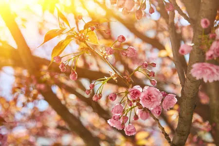
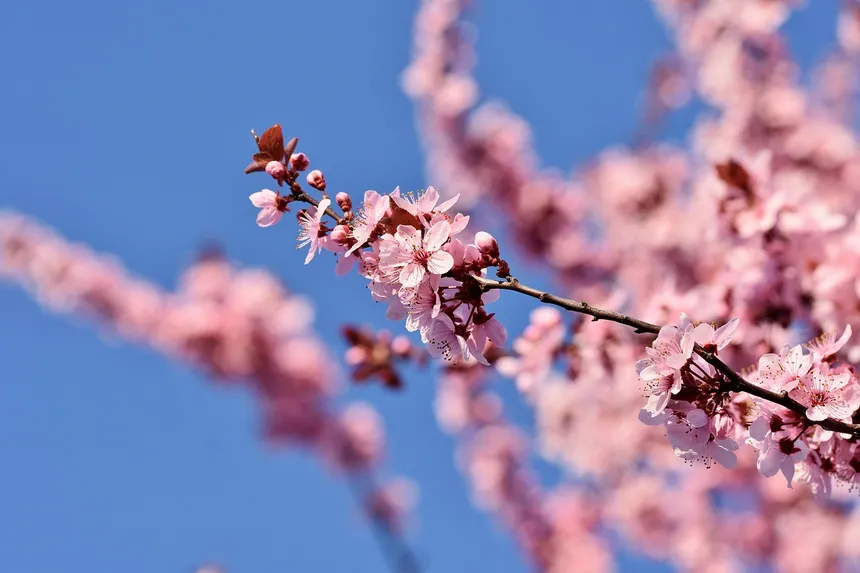
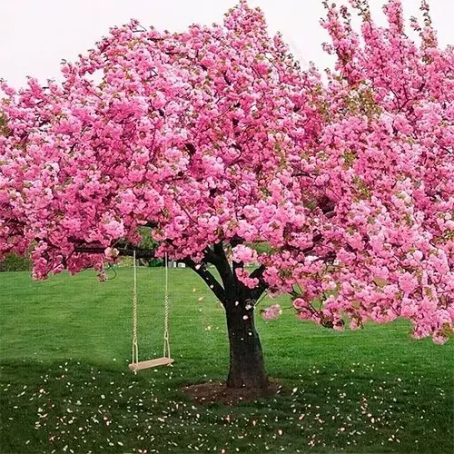
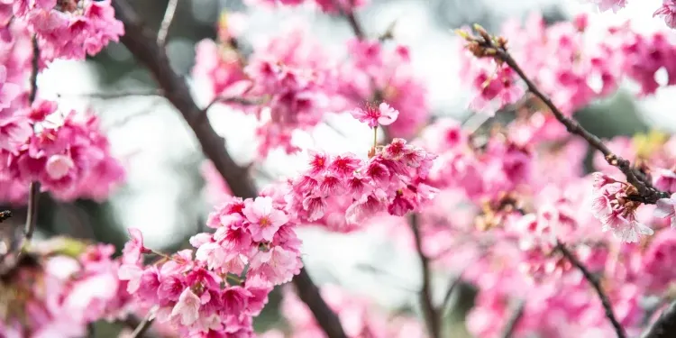

Parque Ueno

Arbol de cerezo donde murio el titan fundador "Eren Yeager"

Tetsugaku-no-Michi

Arbol de cerezo que se baso en la lluvia de cerezos en el Reino de Drum
En Japón, la floración de los cerezos no es solo un evento de la naturaleza, es toda una festividad nacional conocida como Hanami (literalmente, "mirar flores"). Amigos, familias y compañeros de trabajo se reúnen a hacer picnics debajo de los árboles. Para la cultura japonesa, el Sakura representa lo efímera que es la vida (Mono no Aware): las flores alcanzan su máximo esplendor y caen en apenas dos semanas. Esta filosofía del florecer con fuerza y aceptar el destino es la razón por la que vemos tantas escenas nostálgicas de cerezos cayendo en los momentos más emotivos del anime.
#SOYOTAKU